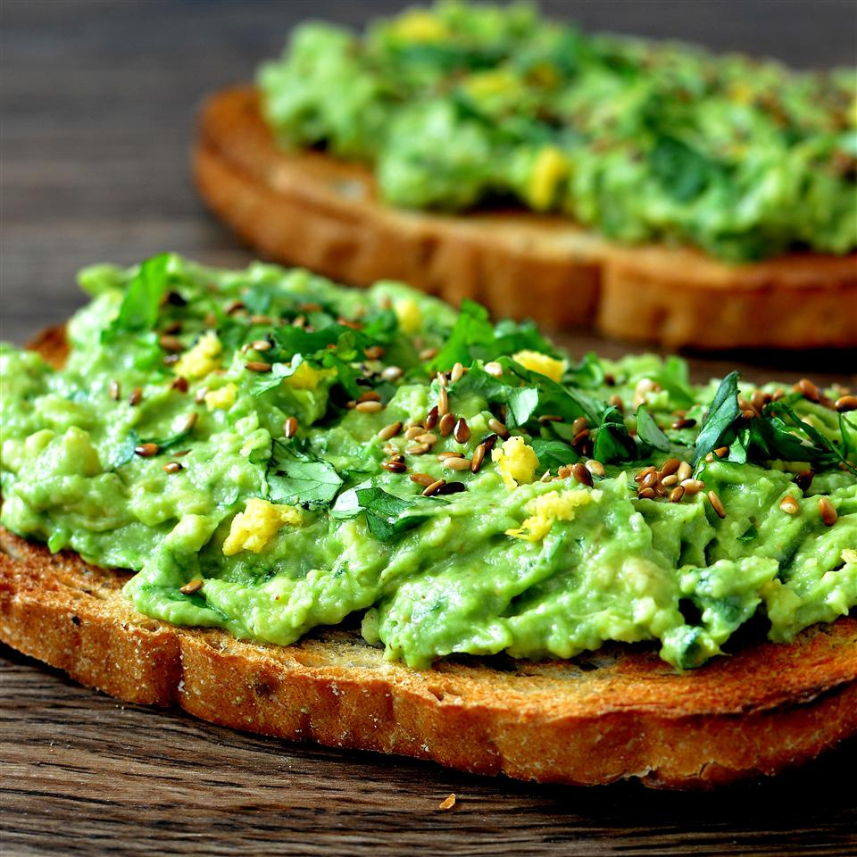

Meyer Lemon Avocado Toast

Description
Preparation time of 10 min. Cooking time of 3 min. Total time of 13 min. Yields 2 servings.
Ingredients
- 2 slices whole grain bread
- ½ avocado
- 2 tablespoons chopped fresh cilantro, or more to taste
- 1 teaspoon Meyer lemon juice, or to taste
- ¼ teaspoon Meyer lemon zest
- 1 pinch cayenne pepper
- 1 pinch fine sea salt
- ¼ teaspoon chia seeds
Steps
- Toast bread slices to desired doneness, 3 to 5 minutes.
- Mash avocado in a bowl; stir in cilantro, Meyer lemon juice, Meyer lemon zest, cayenne pepper, and sea salt. Spread avocado mixture onto toast and top with chia seeds.